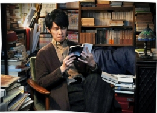

热门标签 [所有热门标签]
最新活动 更多>>
想念一个人是什么感觉？

时间：03月27日 - 04月27日
回复（0）
推荐一首你不会从歌单里删除的一首歌吧
时间：03月27日 - 04月27日
回复（0）
现在的你，最想把时间浪费在什么事情上
时间：03月27日 - 04月27日
回复（0）
说出你的故事

时间：03月27日 - 04月27日
回复（0）
给未来恋人一封信

时间：03月27日 - 04月27日
回复（0）
哪部电影你看了两遍以上，为什么 _

时间：03月27日 - 04月27日
回复（0）
2016年最后一个月想对自己说的话

时间：03月27日 - 04月27日
回复（0）
最低谷的时光，你是怎么度过的

时间：03月27日 - 04月27日
回复（0）
热门资讯
- 晴天娃娃小制作 10月15日
- 用水果制作小动物，用蔬菜... 10月15日
- 要想成为一个自信有魅力的... 10月15日
- 夏日清新爽口凉拌菜... 10月15日
- Elie Saab：中东走出的典... 10月15日
- 饮料瓶手工制作美丽花瓶... 10月15日
- 生煎包子 10月15日
- 玫瑰花的折法：如何用钱折... 10月15日
- 跳皮筋的玩法（附儿歌歌词... 10月15日
- 手工制作：简单好看的蝴蝶... 10月15日